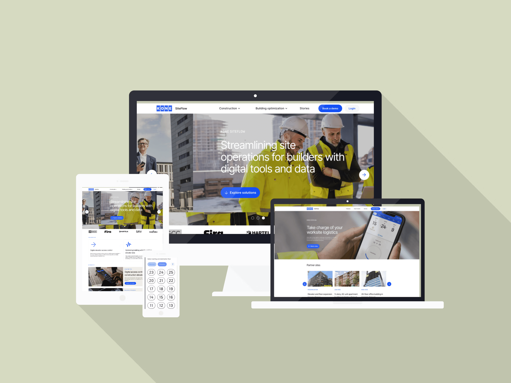

KONE, a global leader in the elevator and escalator industry, has been enhancing urban mobility for over 110 years. As one of Finland's largest corporations, KONE is known for its smart building solutions and innovative designs aimed at making urban life smoother and more efficient. The innovation unit at KONE emphasizes co-creation with customers through a robust digital presence, focusing on developing advanced technologies and solutions that meet evolving urban needs.
What we delivered UI components based on KONE's design guide Landing page optimized for SEO and conversion Custom CMS structure to support robust content type Resources hub for the web app and cloud deployment 90% Faster time-to-campaign 40% More qualified leads
KONE's global marketing team had a comprehensive design guide that was meticulously followed across all digital solutions, ensuring a cohesive brand identity. The challenge was to re-create this design system in Webflow without compromising any brand elements. We needed to replicate all styles, fonts, spacings, colors, and UI elements to maintain consistency.
As a solution, every aspect of the design guide from typography to color schemes and UI components, was faithfully reproduced in Webflow. This allowed the KONE innovation team to experiment with landing pages and launch campaigns faster than the global team, all while preserving full brand consistency.
The end result was a faster, more agile digital marketing process for KONE innovation that upheld KONE’s brand identity.
The website was designed with conversion in mind from the start. The structure was optimized for technical SEO, including a well-defined navigation and heading hierarchy, and correctly sized images to improve loading times and search rankings.
Dedicated call-to-action (CTA) pages were created to effectively convert visitors into leads. CTAs were also placed in blog pages to create softer conversion hooks.
Tracking user behavior was essential to understand how visitors interacted with the site, identify the most effective pages, and pinpoint areas needing improvement. We set up analytics using Matomo and Google Search Console (GSC). Matomo provided privacy-compliant, detailed insights into user paths and behavior on the site, while GSC offered critical data on search performance and indexing status. Campaign tags were also installed to track PPC campaigns.
A cookie policy was implemented in Webflow to comply with EU regulations. This policy not only ensured compliance but also helped build trust with visitors by being transparent about data usage.
A cookie policy was implemented in Webflow to comply with EU regulations. This policy ensured compliance and played a crucial role in enhancing user conversion.
Content was at the heart of KONE innovation’s digital marketing effort. The team needed a streamlined method to publish high-quality content regularly without developers’ involvement. The content team should be able to modify the content independently without dev dependency. Content schedule...
We created a custom blog layout in Webflow that included quotes, infographics, CTA section, multiple headings, hashtags, and a related blog section. This layout ensured that each article was engaging, visually appealing, and effective in driving user actions.
A robust CMS structure was created in Webflow to accommodate various content types. Webflow CMS is user-friendly and allows for easy content management and updates. It supports dynamic content fields, making it simple to add and organize different elements such as text, images, and multimedia.
Over 50 articles were published using this new system. These articles significantly increased KONE’s visibility on LinkedIn and boosted engagement, ultimately driving sales.
After completing the landing page, KONE wanted to leverage Webflow further to support their product-led growth strategy. They needed a flexible and efficient way to build a resource hub within their app, tailored to different user types. Using Webflow, we developed a comprehensive resource hub within KONE's app. This hub included tutorials, step-by-step guides, videos, and other helpful content to assist users in understanding the software's use cases.
The resource hub we developed in Webflow became an invaluable tool for our users. By providing tailored content such as tutorials and guides, we significantly enhanced their understanding and usage of our software, which directly supported our product-led growth strategy - Jussi-Pekka Partanen, Innovation ArchitectThe content pages were deployed in the cloud as static pages, ensuring fast and reliable access. Visibility of the content was restricted based on user type, providing personalized and relevant information to each user group.
The content pages were deployed in the cloud as static pages, ensuring fast and reliable access. Visibility of the content was restricted based on user type, providing personalized and relevant information to each user group.
Cache performance was enhanced by implementing cache busting techniques, which ensured that users always received the most up-to-date content without sacrificing load times.
By leveraging Webflow, the development time for content pages was significantly reduced. This allowed the team to quickly update and add new content without extensive coding, making the process more efficient.
The resource hub quickly became a valuable tool for users, who began utilizing the guides and tutorials to better understand and utilize KONE SiteFlow..
Published 22 May 2026